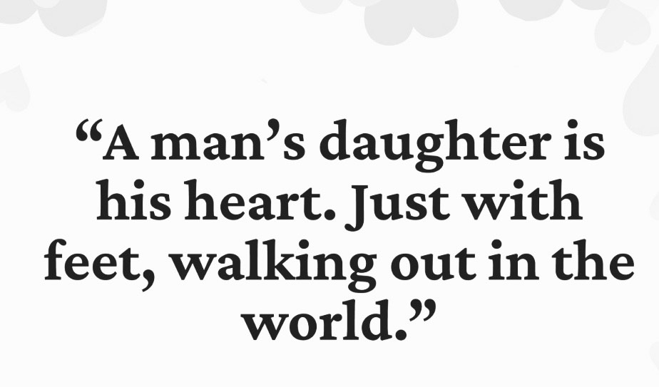

Aldrig kan man förbereda sig på vad för liten människa som plötsligt kommer till denna värld som din. Alltid har man förväntningar, förhoppningar och föreställningar om hur det kommer att bli. Och sällan blir något som man faktiskt trott, oftast i dessa fall blir det bättre.
Det tog lång tid innan du berättade för mig om Viggo, minns hur du sa det med tyngd och nästan ursäktande som att du förväntade dig att bli dömd utifrån något som i mina ögon inte ansågs som ett dugg konstigt, men däremot kan va en enorm utmaning för föräldern i sig. Tycker det intressanta med Viggo är att han är just din son – för endast det är de som gör honom speciell. Lustiga med honom för mig är att han känns lite som med dig, någon jag direkt fattar, som att jag “förstår” honom enbart utifrån det lilla du sagt. Tror redan därför jag är lite svag för den ungen, för mig är det mycket hans pappa över honom även om ni är totalt olika också.
Simon föddes med en nackskada som heter Torticollis, som rejäl nackspärr och han låg med huvudet helt vridet åt ena hållet. Det medförde att han kunde inte amma för det gjorde för ont, jag kunde inte ha honom liggandes hud mot hud utan fick alltid lyfta och bära speciellt och ordna med kuddar så han låg okej, inget i utveckling att lyfta nacke, rulla runt osv skedde naturligt, jag fick kämpa varje dag med övningar i form av sjukgymnastik hans första sex månader. Så den bilden jag hade inför min bebis blev det totalt motsatta nästan hela hans första år.
Och lite så som jag uppfattat för dig så hade jag inte den andre föräldern att bolla med. Det här handlar inte om Simon, men säger det enbart för att du ska förstå att grundprincipen förstår jag även om det ter sig olika.
När ens barn inte hundra procent följer mallen samhället satt så blir det besvärligt för oss föräldrar eftersom man förväntar sig konstigt nog någonstans alltid det sk normala.
Tror det man ofta missar är att sällan är barnen i sig problemen men att föräldern däremot behöver stöd, vägledning och framförallt känna acceptans och förståelse utifrån.
Det är du som ska orka och just du som är byggd som du är måste det blivit och stundtals fortfarande blir en enorm krock. I ena handen tror jag du håller ansvaret att va den bästa pappan och i andra skuld i stunder av trötthet att varför blev det såhär.
Däremot – för dig att möta honom i just nyanser av känsla är och kommer alltid till viss del vara en utmaning. Men se bara de senaste veckorna vilken skillnad du gjort för er bara av att tänka lite annorlunda.
Att du tar upp honom till köksbordet, ställer frukosten framför, ger honom tandborsten etc, att du är konsekvent och skapar en struktur där han inte behöver känna att ansvaret är hans, inte behöver välja, bestämma eller känna efter där det blir svårt för honom utan enbart försöka sin pappa som är tydligt lugn, det tror jag skapar exakt rätt trygghet i honom.
Sen ja i dig så anser du att det här ska jag inte behöva, du tycker varför ska jag, åldern spelar in i ditt sätt att se på det, men egentligen även om ditt egna resonemang spelar in så spelar det ingen roll, huvudsaken är ju att det funkar och ni båda mår bra. Vad gör då de tjugo min extra avsatt tid på morgonen då? Du har hittat ett sätt där ni funkar och livet funkar och det är precis det en bra förälder ska göra.
Det kommer alltid komma utmaningar, men att klara av att stanna upp, se på saker från en annan vinkel och agera därefter då har man alltid lösningen någonstans.
Så vad försöker jag säga med allt detta, jo att du är en så mycket bättre förälder än de flesta för du försöker förstå, du ger inte upp och du har hjärtat på rätt plats och vill alltid väl. Tvivla inte på din egna förmåga, den finns där och även om det ibland kan kännas läskigt som att traska på tunn is så kommer du alltid va din sons stabila punkt, pappan som alltid är där, han som bryr sig och redan där har du vunnit allt.
 Alva